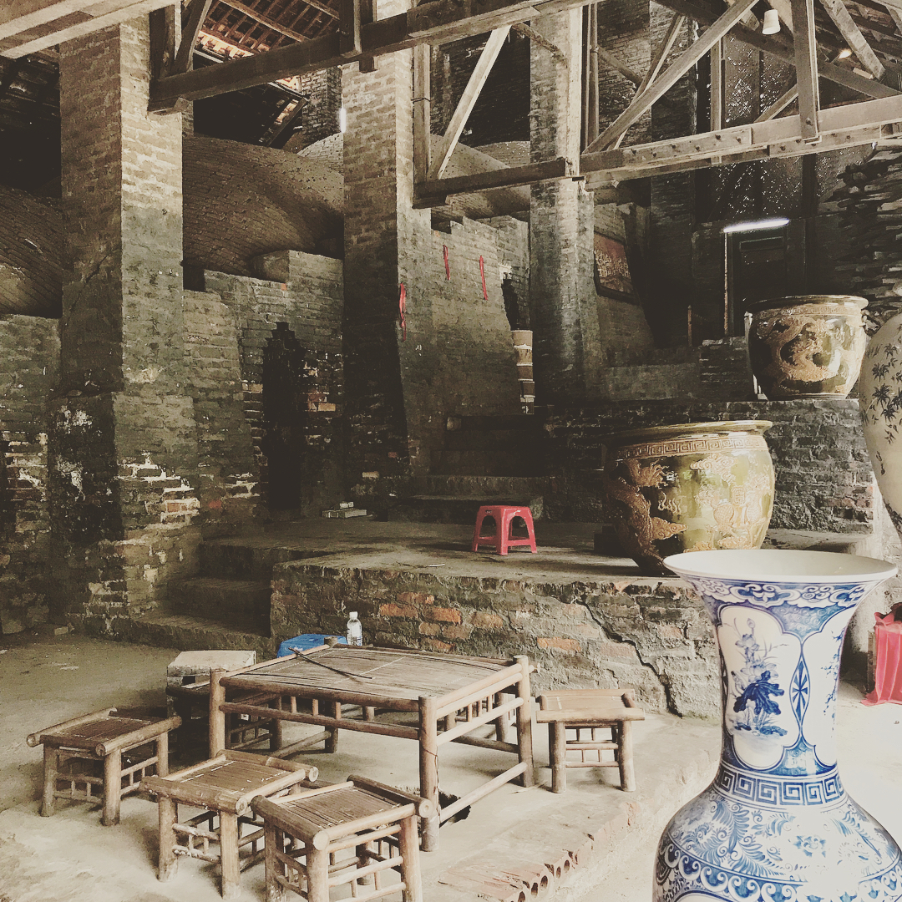
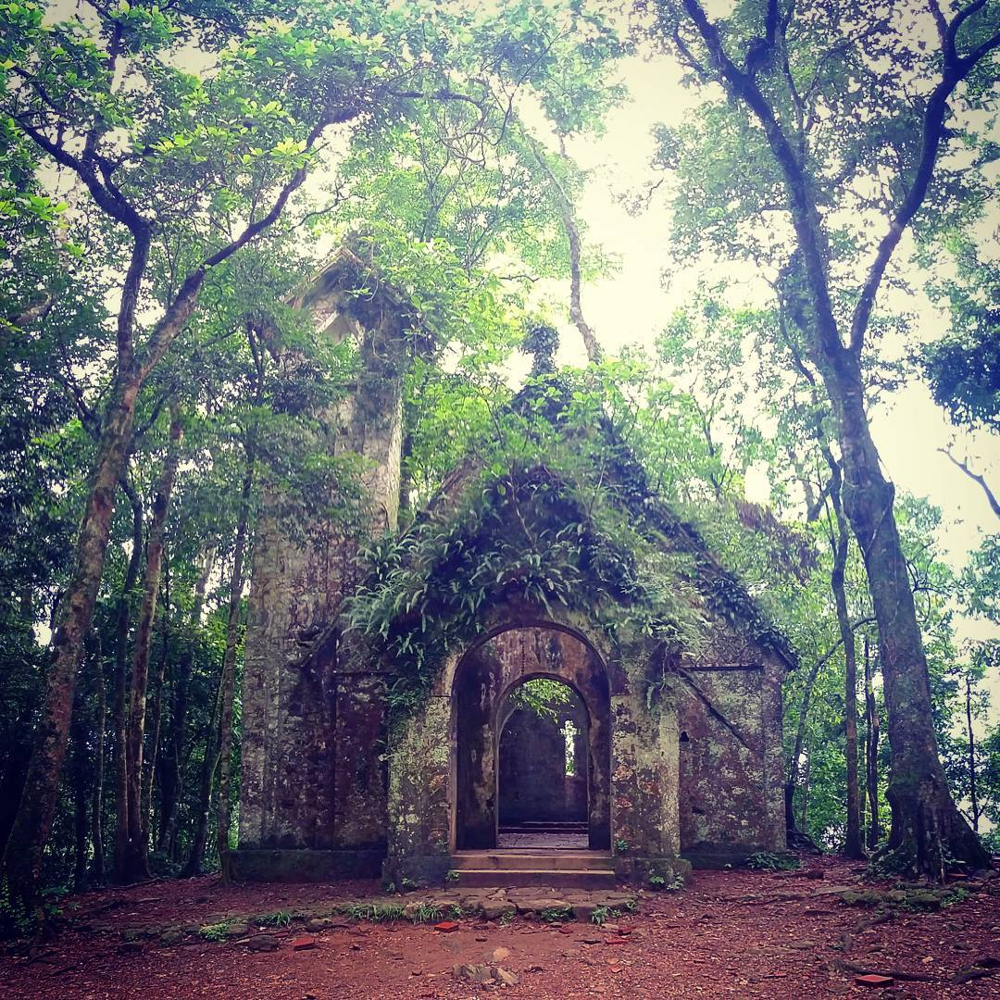
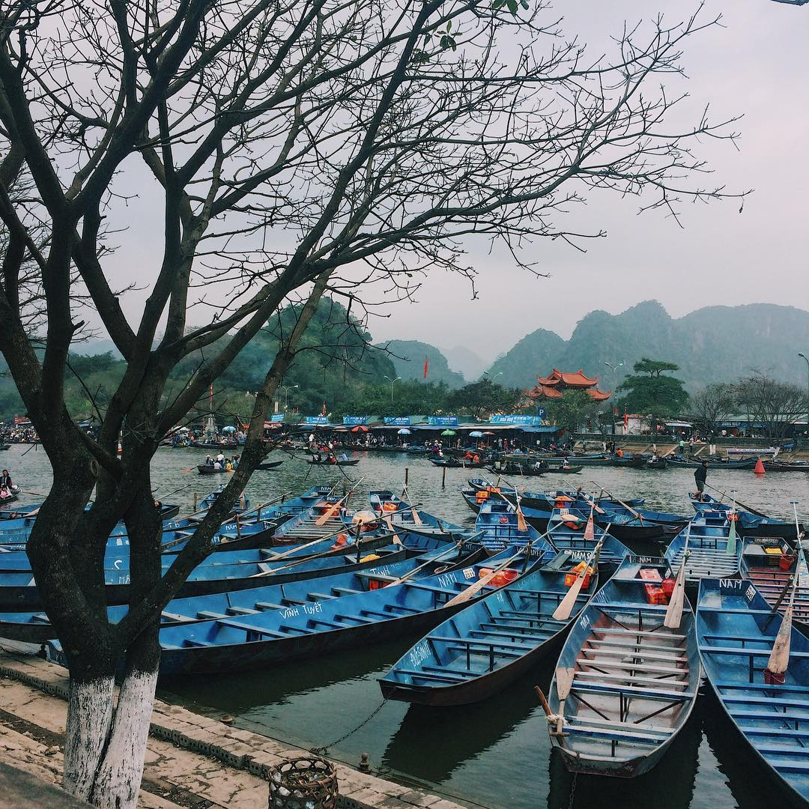
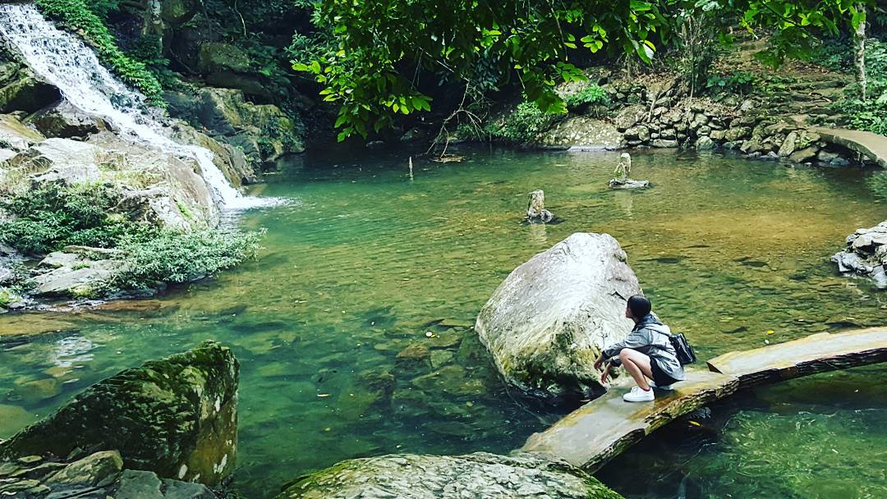
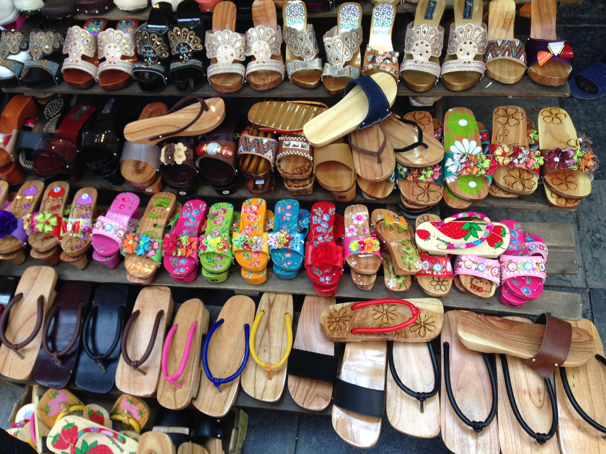
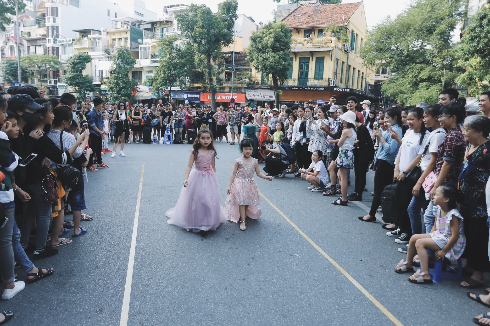
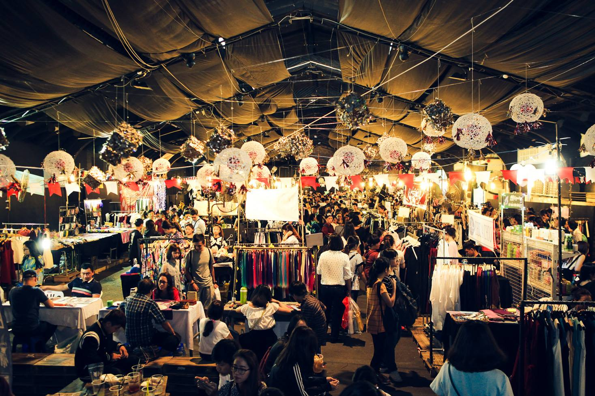
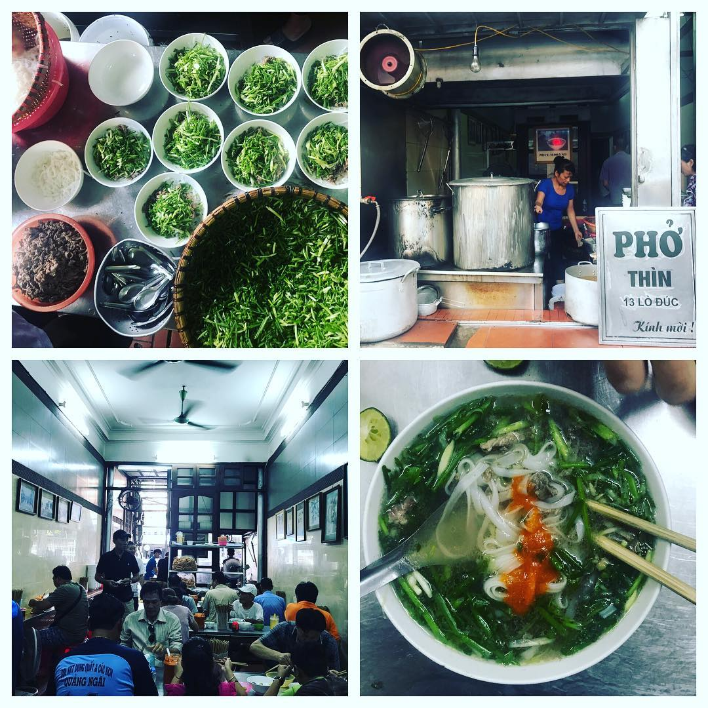
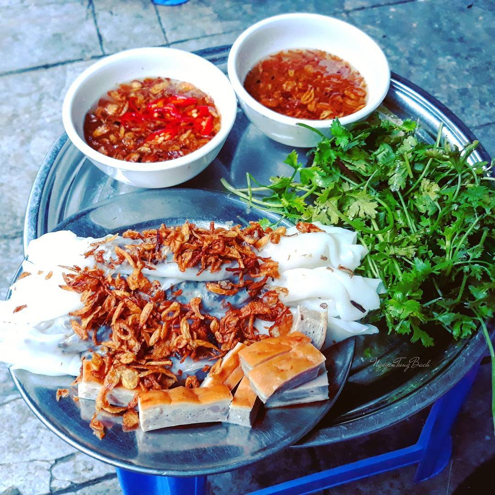
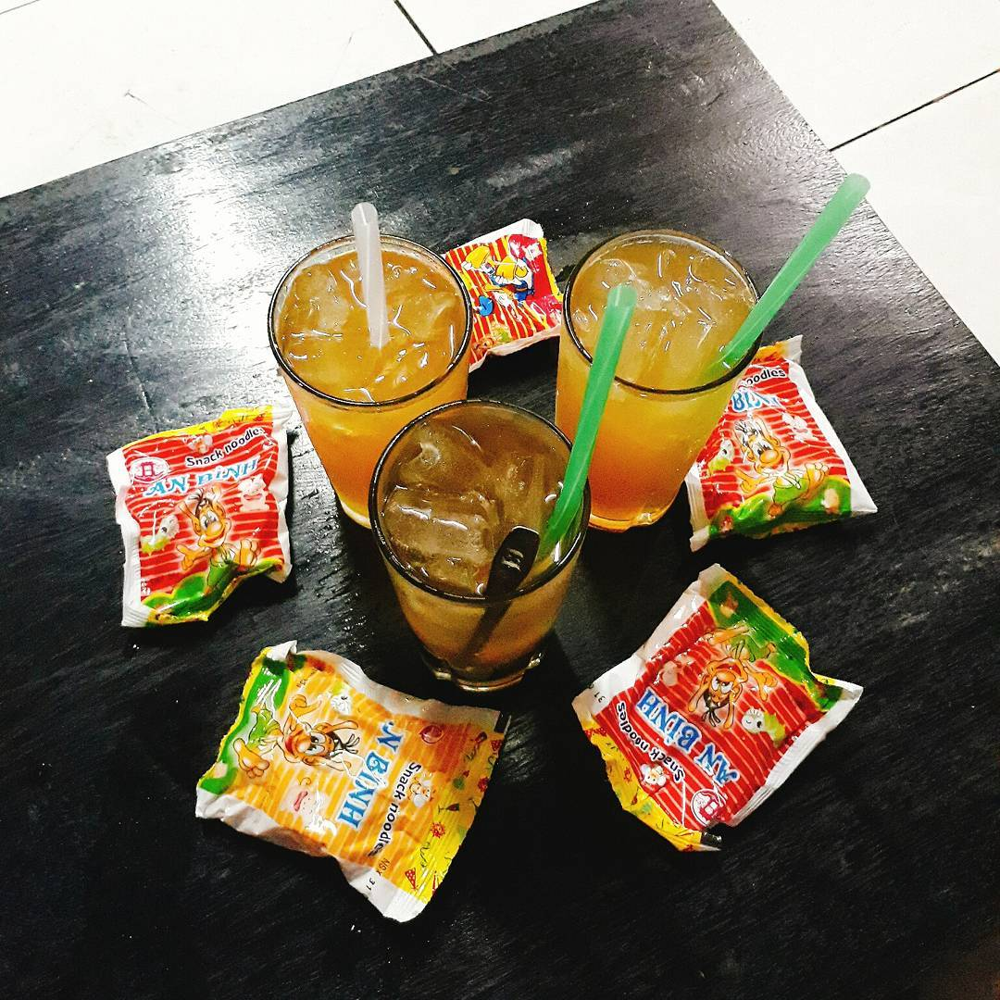

Mục lục
Nếu bạn nghĩ rằng 2 ngày cuối tuần là quá nhiều thời gian và bạn không biết đi chơi ở đâu cho đáng đồng tiền bát gạo thì đó là một sai lầm lớn. Có quá nhiều điểm du lịch quanh Hà Nội chất đến từng góc khuất. Điều mà bạn phải làm là lên một danh sách mỗi cuối tuần một kế hoạch xê dịch khác nhau, rủ thêm bạn bè và đưa nhau đi trốn. Tiêu chí của dạng “staycation” này là phải gần, có thể đi về trong ngày, thắt lưng buộc bụng nhưng vẫn phải đảm bảo có đủ chỗ ăn, chơi, mua sắm, ngắm cảnh và ăn uống thả ga.
1. Không cần đi xa vẫn quẩy thả ga
Nếu không có nhiều thời gian nhưng vẫn muốn có một chuyến du lịch thật chất ở một nơi xa trung tâm, xa phố thị ồn ào thì bạn nên suy nghĩ đến việc đi trốn tại một trong những điểm du lịch quanh Hà Nội, có thể đi về trong từ một đến hai ngày cuối tuần. Chuyến đi không quá xa, ngắn ngày nên chi phí cũng rất hợp lý mà bạn vẫn có đủ kiểu vui chơi khác nhau như đi trekking, cắm trại, ngắm cảnh hoặc du lịch sinh thái, trải nghiệm văn hóa các vùng miền.
Bát Tràng là địa điểm đầu tiên mà giới trẻ Hà Thành nghĩ đến, vừa gần, vừa vui, tha hồ nhào nặn, nung gốm, chụp ảnh thoải mái, chiêm ngưỡng các tác phẩm nghệ thuật từ bàn tay của các nghệ nhân, mà vẫn có thành phẩm mang về nhà làm kỉ niệm.
Trekking tại vườn quốc gia Ba Vì để hòa mình vào thiên nhiên xanh thẳm, hít thở không khí trong lành và lắng nghe tiếng gió lùa qua vai. Khu vườn xanh mát có nhiều cảnh đẹp, cổ kính và độc đáo như nhà thờ cổ, vườn xương rồng trong nhà kính hoặc những đường đèo, con suối đẹp hút hồn.
Tam Đảo có thời tiết rất đẹp, có thể sánh ngang với Đà Lạt hoặc Sapa. Nơi đây có thời tiết se lạnh, không khí trong lành và khung cảnh nên thơ, mờ ảo trong màn sương khói. Tam Đảo cũng là nơi sống ảo tuyệt vời, mang lại cho bạn nhiều cảm hứng nghệ thuật.
Chất miễn bàn, làng cổ Đường Lâm với những ngôi nhà trăm tuổi đời. Với những bạn từ nhỏ đã lớn lên ở thành thị thì những bức tường đá ong, đường gạch, giếng nước, sân đình, chùa cổ sẽ là lần đầu tiên được nhìn thấy. Một khung cảnh bình yên và chan hòa đến ấm lòng.
Trekking trên hành trình về chùa Hương là về đất Phật Giáo, một trong những nơi Bồ Tát Quan Thế Âm ứng hiện tu hành. Nơi đây có đủ sông, suối, núi đồi, cây cỏ, hang động và cả một nền văn minh phật giáo đồ sộ, huyền bí. Bạn có thể mất khoảng 2 ngày nếu muốn tham quan hết tất cả những di tích của quần thể Chùa Hương linh thiêng bậc nhất.
Khoang xanh – Suối Tiên chỉ cách Hà Nội có khoảng 1 tiếng chạy xe mà lại có hẳn một khu du lịch sinh thái xanh mát. Đó là lý do mà lớp lớp, nhóm nhóm các bạn trẻ cuối tuần lại rủ nhau đi trốn nóng tại Khoang Xanh. Đi qua dòng suối mát lạnh, khung cảnh lại đẹp nên thơ, có ai mà không muốn?
2. Chỉ cần dạo quanh phố cổ, không thiếu chốn vui chơi
Từ ngày phố đi bộ tại Hà Nội được khai trương bao quanh Hồ Gươm và len vào một số con phố cổ, nó đã trở thành một điểm đến quen thuộc cuối tuần của các cặp đôi, gia đình và nhóm bạn. Dạo quanh bờ hồ trên những con đường rộng lớn, bằng phẳng, đón gió từ hồ và chút nắng nhẹ để cảm nhận chút thi vị, giản đơn từ thủ đô.
Cuối tuần cũng là thời điểm mà Hồ Gươm khoác lên mình tấm áo thư giãn vào buổi sáng, tấm áo trẻ trung vào buổi chiều và tấm áo sôi động, cuồng nhiệt vào mỗi tối. Tấm áo ấy được dệt lên bởi rất nhiều hoạt động hấp dẫn, trẻ trung.
Buổi sáng mát mẻ, đường xá còn khá vắng là thời điểm đẹp nhất để bạn tản bộ rồi ghé vào một quán nhỏ, nhâm nhi tách cà phê với từng giọt đắng hoặc tách trà nóng thơm nồng nàn. Thời tiết đẹp, bạn nên chọn cho mình một quán cà phê ngoài trời, trên ban công hoặc quanh bờ hồ thật thoáng mát để có cảm giác thư giãn nhất có thể.
Đinh Lễ và Nguyễn Xí là hai con phố thân quen của dân mọt sách. Tại đây cũng có những quán cà phê sách rất đẹp và yên tĩnh, nơi bạn, sách và cà phê có thể hòa làm một. Rất nhiều đầu sách quý, sách mới có mặt tại hai con phố này nên nếu cuối tuần muốn làm thanh niên nghiêm túc, thanh niên yêu sách, ham đọc thì có thể ngồi cả ngày cũng được.
Shopping thả ga quanh phố cổ nếu bạn là một người dân địa phương. Các con phố đan xen nhau hình ô bàn cờ với nhiều phường buôn bán tấp nập. Quần áo thời trang hàng Ngang, hàng Đào, guốc, dép, giày da ghé Hàng Dầu, trang sức lung linh ghé hàng Bạc, phụ kiện lấp lánh ghé hàng Bồ và rất nhiều con phố khác, mỗi con phố một mặt hàng, một câu chuyện thú vị để bạn tranh thủ ghé thăm vào cuối tuần.
Xung quanh hồ Gươm có rất nhiều hoạt động văn hóa nghệ thuật thú vị, thu hút lượng lớn giới trẻ Hà Thành và khách du lịch cùng tham gia như kéo co, ô ăn quan, ảo thuật, nhảy sạp, nhảy dây, nặn tò he, vẽ tranh chân dung, nhảy hiện đại, khiêu vũ, trượt ván và cả màn biểu diễn của những ban nhạc đường phố với nhiều dòng nhạc và phong cách khác nhau.
Chợ đêm họp dọc hàng Ngang, hàng Đào kéo xuống tận chợ Đồng Xuân vào cuối tuần lúc nào cũng tấp nập, nhộn nhịp với đủ mặt hàng thời trang, phụ kiện và ăn uống. Đây là một phiên chợ mà bạn có thể ghé để đi chơi vào cuối tuần cùng bạn bè, tranh thủ ăn quà vặt, mua sắm mà giá cả thì rất sinh viên.
Hà Nội có rất nhiều tiệm trà chiều đúng nghĩa chiều lòng tất cả những ai yêu thích chúng. Từ chất lượng trà, bánh, cà phê cho đến kiến trúc, bày trí tại cửa tiệm, mỗi nơi một phong cách, đẹp miễn bình luận, Bạn có thể ngồi hàng tiếng đồng hồ, trò chuyện cùng đám bạn thân về đủ thứ câu chuyện trên đời.
Khu phức hợp, triển lãm nghệ thuật hoặc trung tâm thương mại là một trong những lựa chọn phổ biến nhất. Bạn có thể thỏa sức mua sắm, ăn uống, xem phim và quan trọng là rất nhiều nơi đáp ứng nhu cầu sống ảo của bạn như Time City, Royal City, Vincom Bà Triệu, trung tâm Nghệ thuật đương đại Vincom, Ha Noi Creative City…
3. Đắm chìm quên lối về trong thế giới ẩm thực phố cổ
Nếu bạn xác định hai ngày cuối tuần nhấn chìm toàn thân trong biển ẩm thực, bạn không cần đi đâu xa khỏi 36 khu phố cổ trứ danh. Hà Nội là một thành phố với bề dày và độ phong phú của ẩm thực quá ư là chiều chuộng mọi khẩu vị, bất kể bạn là ai.
Ăn sáng, ăn trưa, xế chiều và ăn đêm, bạn đều có thể tìm thấy những quán ăn ngon xuất sắc, trứ danh lâu đời và luôn đông khách bất kể mùa nào. Thậm chí, một số quán nằm len lỏi trong các ngõ ngách, vẫn nườm nượp khách ra vào. Bạn có thể phải đứng chờ để tới lượt mình thưởng thức.
Phở Hà Nội nổi tiếng ngon trứ danh với nhiều thương hiệu gia truyền như Phở Thìn ở Lò Đúc, Phở 10 Lý Quốc Sư, Phở Bát Đàn, Phở Cồ… Mỗi thương hiệu đều có một công thức bí truyền thần kì tạo nên mùi vị không thể lẫn đi đâu được. Vào mùa đông, trời gió lạnh, ăn bát phở nóng, quẩy giòn, dấm tỏi thơm nồng thì tuyệt cú mèo. Những quán này mùa đông luôn tấp nập khách, không phải lúc nào cũng có chỗ ngồi.
Bánh cuốn nóng được tráng trực tiếp, liền tay cuốn thịt bằm, mộc nhĩ, nấm hương ăn với nước mắm, chả cốm là một tuyệt phẩm bất kể mùa hè hay mùa đông. Một vài cửa hàng bánh cuốn nổi tiếng như Bánh cuốn Thanh Vân 14 Hàng Gà, Bánh cuốn Bà Hoành 66 Tô Hiến Thành, Bánh cuốn nóng 49 Nguyễn Bỉnh Khiêm…
Trà chanh chém gió phố Nhà Thờ tuy không phải là một đặc sản nhưng có thể xem là một hoạt động từng khuynh đảo giới trẻ Hà Thành. Những cốc trà chanh thơm mát, một vài món ăn vặt như khoai tây chiên, nem chua nướng, nem chua rán, quẩy nóng, cá bò, mực nướng… Một chiều cuối tuần trẻ trung, rôm rả với vô vàn các câu chuyện vui không kể xiết.
Dốc hàng Than nổi tiếng khu ăn vặt thần thánh với những món ngon nức lòng giới trẻ mà bạn không nên từ chối nếu được rủ đến đây. Kem trái dừa, sữa chua nếp cẩm, sữa chua mít, thạch, bánh flan nước cốt dừa, sữa chua dẻo ca cao và vô số những món ăn ngon chỉ nghe tên thôi là các hội chị em đã cuống lên rồi. Đặc biệt dốc hàng Than còn thơm phảng phất mùi bánh cốm, bánh khảo, bánh chín tầng mây, những thức quà rất Hà Nội.
Còn gì tuyệt vời hơn khi hai ngày cuối tuần được vi vu những địa điểm du lịch quanh Hà Nội cùng đám bạn, bỏ lại đằng sau những bộn bề công việc, hít thở khí trời mà chẳng cần lo nghĩ nhiều đến hầu bao. Mau mau chóng chóng hẹn hò hội bạn thân và xếp lịch ngay thôi nào.
30 quán ăn ngon Hà Nội mà khi đến nhất định bạn phải thử một lần.
Những địa điểm đẹp không thẻ bỏ lỡ tại Hà Nội mà bạn nhất định phải đến.
Tổng hợp 27 món ăn ngọn tại Hà Nội không thể bỏ lỡ.
Khu du lịch sinh thái Đan Phượng môt điểm đến hấp dẫn.
Điểm vui chơi Noel hấp dẫn mà ai cũng nên đến Ở Hà Nội 2020 2021